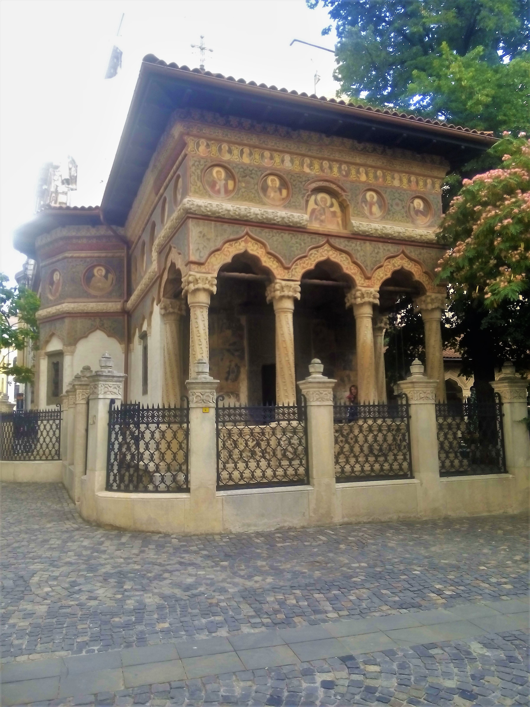
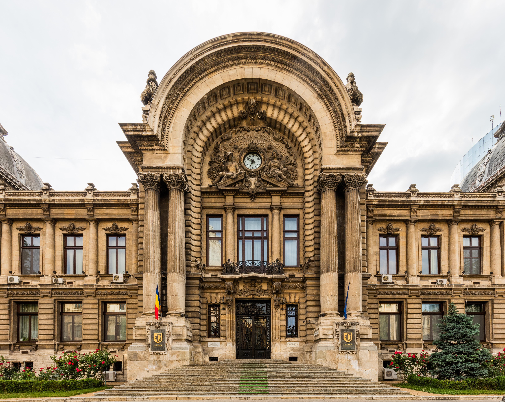
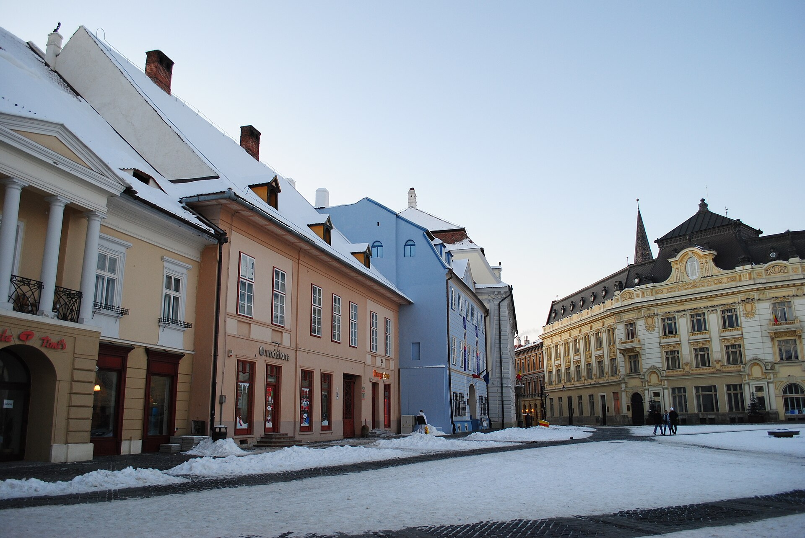

the avenue
Bucharest before Little Paris
A wooden city
kept its name.
Une ville de bois garda son nom.
Before it acquired stone façades and grand public rooms, Bucharest was a place of timber bridges, gardens, church domes and mud. Its later Western face was laid over a city that already knew how to gather forms from more than one world.
Avant de posséder des façades de pierre et de grandes salles publiques, Bucarest était une cité de ponts de bois, de jardins, de dômes d’église et de boue. Son visage occidental ne fut posé que plus tard sur une ville qui savait déjà aller chercher ses formes dans plus d’un monde.
The old Podul Mogoșoaiei was a road paved with wooden beams, ordered in 1692 by Constantin Brâncoveanu to join his court to the estate at Mogoșoaia. Around it stood merchants’ houses, inns, Orthodox churches and the long, low compounds of a Danubian capital. The city’s own high style was Brâncovenesc: Byzantine inheritance sharpened by the Balkans, by Ottoman craft and by a princely taste for carved stone. Its vine scrolls, arcades and twisted columns did not vanish when France appeared on the horizon. They waited in courtyards and side streets, ready to become part of the answer.

A European address
Stone became
a political
verb.
La pierre devient un verbe politique.
After the Treaty of Adrianople in 1829 opened the principalities more fully to European commerce, Bucharest began to commission itself a different public face. French, Austrian and German-speaking architects were invited to make palaces, ministries, banks and schools. Michel Sanjouand’s Știrbei Palace and the Austrian architects Conrad Schwink and Johann Veit’s Suțu Palace gave the new capital façades that could be read from Paris or Vienna.
These buildings were not decoration placed on a finished nation. They announced institutions that still had to be made durable: a civil service, a treasury, a court, a school system, a concert public. Architecture supplied confidence in advance. A balcony, a pediment or a formal avenue could tell a visitor that this place expected a future in which law, credit and culture would need rooms of their own.
Paris, 1853–1870
Haussmann was a lesson
in scale.
La transformation de Paris par Haussmann, modèle des villes européennes.
Paris under Napoleon III gave nineteenth-century Europe a compelling image of what a capital could do: connect districts with broad routes, stage public institutions along them, and make movement itself part of civic life. Bucharest was never remade by a Baron Haussmann, and it would be careless to pretend otherwise. Its streets remained irregular; the old city did not surrender its whole grain.
La transformation de Paris par le baron Haussmann (préfet de la Seine de 1853 à 1870) est l’un des faits les plus marquants de la période. Haussmann fait percer l’avant-blas de Paris, ouvrir des percées (boulevard de Sébastopol, boulevard Haussmann, rue de Rivoli), créer des parcs (parc des Buttes-Chaumont, parc Monceau), installer un réseau d’eau et d’égouts, et faciliter la circulation. La capitale passe d’une ville de l’Ancien Régime à une ville moderne. Paris devient la « Ville lumière ».
But the Parisian example changed the architectural imagination available to a young Romanian state. The point was not a carbon copy of the boulevards. It was the conviction that streets, light, façades and public buildings could form a language of order. At the École des Beaux-Arts, where plans were disciplined by axis, proportion and procession, Romanian students encountered a way of making public aspiration visible.
Mais l’exemple parisien changea l’imagination architecturale dont disposait un jeune État roumain. Il ne s’agissait pas de reproduire les boulevards. Il s’agissait de la conviction que les rues, la lumière, les façades et les bâtiments publics pouvaient former une langue de l’ordre. À l’École des Beaux-Arts, où les plans étaient disciplinés par l’axe, la proportion et la procession, les étudiants roumains rencontrèrent une manière de rendre visible l’aspiration publique.
1878
The road
changes its name.
La route changea de nom.
After the War of Independence, Romanian troops returned to Bucharest along the old Podul Mogoșoaiei. The road was renamed Calea Victoriei — Victory Avenue. It became a spine on which a state could hang its new self-image.
- 1866Carol I arrives from the Hohenzollern-Sigmaringen house: a German dynasty for a new constitutional monarchy.
- 1878Independence is recognised. The former bridge-road becomes Victory Avenue.
- 1880sFrench academic architects and Romanian graduates of Paris give the avenue its public rooms.
- 1914A chain of palaces, museums, hotels and concert halls has turned a route into a civic stage.

Ateneul Român · 1888
A room for
a public
culture.
Une salle pour une culture publique.
French architect Albert Galleron arrived on the recommendation of Charles Garnier, whose Paris Opera had made the ambitions of the Beaux-Arts visible to the world. Galleron’s Athenaeum was circular because the foundations had first been laid for a riding school; the accident became a gift. Behind its eight Ionic columns rose a hall made for lectures and symphonies, not for a court alone.
The Romanian Athenaeum Society lacked the money for such a building. Its answer was a national subscription, remembered in the rhyme Dați un leu pentru Ateneu — spare a leu for the Athenaeum. The slogan made culture sound like a common undertaking. In 1919, after the First World War, the building hosted the assembly that ratified the union of Bessarabia, Bukovina and Transylvania with the Old Kingdom. A concert hall had become a room in which a nation could hear itself speak.
Calea Victoriei
A street
of institutions.
Une rue d’institutions.
The Beaux-Arts manner gave Bucharest a shared grammar: rusticated bases, monumental entrances, domes, sculpture, mansards and carefully controlled arrival. French architects Paul Gottereau and Cassien Bernard, alongside Romanian architects trained in the same schools, made banking, music and private wealth look as if they belonged to a capital confident enough to last.

Little Paris was never one building, one nation, or one borrowed style.
It was a route between the local and the legible.A Romanian school
Paris returned
with a porch.
Paris revint avec un perron.
Ion Mincu, trained at the École des Beaux-Arts, asked a harder question than imitation: what would happen if the academic composition learned in Paris admitted the memories of a Romanian house? His Lahovary House of 1886 joined a formal French plan to Brâncovenesc brackets, vernacular woodwork and the deep shelter of a porch. The result helped form the Neo-Romanian current that his students carried into the twentieth century.
This was a vocabulary of selection rather than purity. Mincu’s architecture looked backwards to monasteries, peasant craft and the Balkan veranda while looking outward through the professional discipline of Paris. The tension is the point. A style becomes alive when it is capable of carrying more than one memory at a time.

Another westernness · Transylvania
Germany arrived
by way of towns.
L’Allemagne arriva par les villes.
Romania’s architectural west did not begin only with Paris. In Transylvania, Saxon settlers had been building and governing towns for centuries. Sibiu, Sighișoara and Brașov hold the street pattern of merchant communities, fortified churches, Gothic halls, Lutheran institutions and later Habsburg baroque. Their German history is not an accessory to Bucharest’s French chapter; it belongs to a different political landscape, with its own privileges, inequalities, languages and religious life.
That distinction gives the country’s architecture its depth. UNESCO’s account of Sibiu describes a city whose squares, plots, fortifications and Gothic, Renaissance and Baroque fabric record six centuries of economic and civic power. By 1918, when Transylvania joined the kingdom, Romania inherited not a blank provincial margin but a dense urban archive. Little Paris met Hermannstadt, Kronstadt and Schäßburg inside the same state.
The layered city
A building can say:
we expect to be here.
Un bâtiment peut dire : nous comptons y être.
Earthquakes, war, demolition and dictatorship took much away. Yet on the same map, the Brâncovenesc church, the Beaux-Arts bank, the Athenaeum’s dome, a Saxon market square and a twentieth-century modernist façade continue their argument. Romania’s built inheritance does not offer one origin story. It offers evidence of a society that kept choosing, translating and rebuilding its place in Europe.
Sources & image credits
History and architecture
- George Enescu Philharmonic — the Athenaeum’s 1886–97 construction, Galleron, Garnier, the subscription campaign and European Heritage Label.
- UNESCO: Historic Centre of Sibiu — Saxon settlement, urban form, fortifications, civic and commercial history.
- UNESCO: Biertan evaluation — Saxon settlement and the wider influence of Transylvanian defensive architecture.
- Bucharest.ro — Podul Mogoșoaiei and its 1878 renaming as Calea Victoriei.
- Florica Dumitrescu et al., Bucharest: An Architectural Guide; Romanian Cultural Institute, The Foreigners and the Modernization of Bucharest.
Images
- Calea Victoriei historic postcard — hero image.
- Stavropoleos Monastery — photograph by nickispeaki, Wikimedia Commons.
- Romanian Athenaeum — Mihai Petre, CC BY-SA 3.0 RO.
- CEC Palace — Diego Delso, CC BY-SA 4.0.
- Piața Mare, Sibiu — Andrei kokelburg, CC BY-SA 3.0 RO.